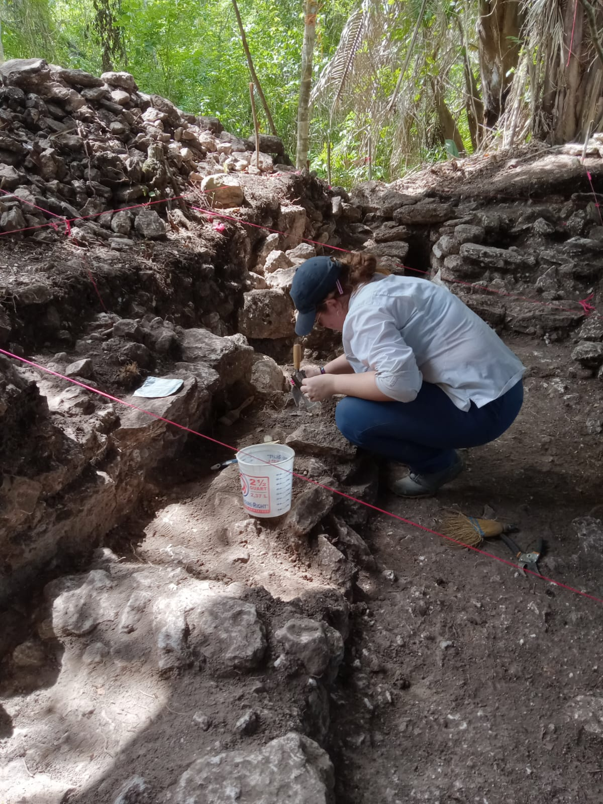

Fieldwork
Excavation and survey experience across multiple Maya sites, including mapping, unit excavation, and lab processing.
Maya archaeology • field methods • settlement & landscape
I am a Ph.D. student focusing on [your specific topic], with fieldwork experience in [region/site]. My work integrates excavation data, GIS, and artifact analysis to understand how people lived, moved, and made meaning.
I am an anthropological archaeologist with six years of field experience investigating the ancient Maya of the lowlands of Central America. Most of my research has focused on the Belize River Valley in West-central Belize where I currently work as part of the Mopan Valley Preclassic Project, but I have past field experience in Northwest Belize as well as some laboratory experience in Historic period artifact analysis in the United States. My dissertation research centers on a close investigation of a Late Classic Maya household at the site of Las Ruinas de Arenal and explores how the household engaged in various productive activities like crafting and feasting to negotiate their status and place in social memory at the site. I received my M.A. in anthropology from the University of Texas at San Antonio (UT San Antonio) in 2025 as part of my process through the Ph.D. program at the same university. I am currently a Lecturer at UT San Antonio and have taught multiple introductory-level courses within the anthropology department.

Ph.D. Student, Department of Anthropology, University of Texas at San Antonio
Advisor: Prof. [Name] • Lab/Project: [Name]
Excavation and survey experience across multiple Maya sites, including mapping, unit excavation, and lab processing.

Household economies, daily practice, and landscape use—using ceramics, lithics, and spatial analysis.
GIS, field documentation standards, and reproducible workflows for data cleaning, archiving, and reporting.
Commitment to ethical research, local collaboration, and public-facing writing about archaeology and heritage.
Use this page for 1–2 paragraph summaries, then a few “project cards.” Keep it scannable.
Short summary (5–7 sentences). What question are you answering? What evidence? Why does it matter?
1–2 sentences on your contribution and outcomes (poster? dataset? report?).
1–2 sentences. Add links to open materials if you have them.
Option A: link a PDF. Option B: embed a concise HTML CV here (recommended) and also provide a PDF download.
List upcoming first, then selected past. Add links to slides, posters, abstracts, or recordings when available.
This can be a short philosophy plus a concrete “what students do in my class” section.
I aim to help students build confident, evidence-based arguments while understanding archaeology as both a scientific practice and a humanistic inquiry. In my courses, students learn to read material culture critically, practice ethical reasoning, and connect archaeological questions to contemporary concerns about heritage, identity, and stewardship.
Replace this with her own voice (250–500 words is usually enough for a website).
If you use site photos featuring collaborators or community members, confirm permissions and consider adding short captions and credits.